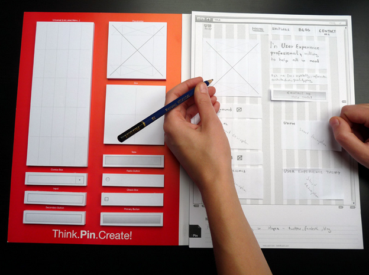
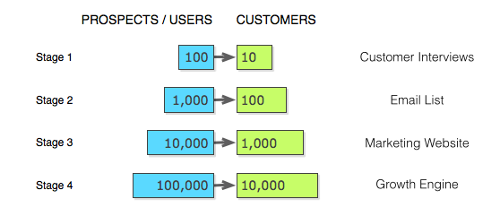

عندما بدأت العمل على إنشاء تطبيق UXPin المُتخصّص في إنشاء النّماذج الأوّليّة، كنّا نؤمن بأسلوب "الحدث العظيم" للكشف عن المُنتجات، حيث تقضي شهورًا مع فريق التّطوير تُنشئ مُنتجًا كثير الميّزات، ثمّ تكشفه للعالم. ولكنّنا اكتشفنا خلال وقتٍ قصير أنّ هذه الاستراتيجيّة غير مضمونة دومًا، بل هي تُصيب وتُخطئ، فإن أصابت تحوّل مستخدمو الإصدار التّجريبيّ إلى مُشتركين دافعين في المنتج سريعًا؛ ولكن إن أخطأت ضاعت ساعاتٌ طويلة من العمل وأموال كثيرة، وشيء من صحّتنا معها. تعلّمنا بعد ذلك أنّ علينا إصدار المُنتجات بطريقة أكثر ذكاءً، لا أكثر ضخامة!
وهنا يأتي دور MVP، أو المنتج الفعّال القاعديّ (Minimum Viable Product)، الّذي يتيح للشّركات تحرّي صدق توقّعاتهم عن زبائنهم بأدنى حدّ من الجهد. مؤخّرًا، بعد أن تعلّمنا من أخطائنا السّابقة، انتقلنا إلى إصدار ميّزات أصغر بصورة أكثر تواترًا، وهذه الميّزات الصّغيرة تُمثّل منتجاتنا الفعّالة القاعديّة. فإذا أردنا مثلًا طرح كتاب إلكترونيٍّ كامل، فإنّنا ننشر في البداية صفحة تشرح الكتاب لنقيس الاهتمام العامّ به. ولو أردنا طرح ميّزات التّكامل مع مجموعة من البرامج الأخرى (كما فعلنا منذ فترة مع برنامجي Photoshop وSketch)، فإنّنا ندمج بضع ميّزات مع البرنامج الأبسط أوّلًا (في حالتنا هو Sketch) ثمّ نطرح نُسخة بيتا تجريبيّة قبل أن نتابع نحو الدّمج الشّامل.
سنُبيّن في هذه المقالة بعض المفاهيم الخاطئة المُتعلّقة بـMVPs، وبعض الوسائل المُختلفة الّتي يمكن لمُصمّمي تجربة الاستخدام استعراضها بهدف تحقيق التوازن بين "القاعديّة" و"الفعّاليّة" و"جودة المنتج".
يُشير المُصطلح "المنتج الفعّال القاعديّ"، الّذي وضعه مؤسّس SyncDev Frank Robinson وعمّمه Eric Ries مؤسّس IMVU، يُشير إلى إصدار شيءٍ ما بُسرعة، سواء أكان مُنتجًا مادّيًّا أو مجرّد صفحة ترويجيّة، وغاية ذلك تبيّن صدق الافتراض الّذي قام عليه المُنتج. ولكن الحقيقة أنّه من السّهل أن نقع في فخ "القاعديّة" في MVP دون أن نتأكد من أنّ لدينا "مُنتجًا فعّالًا". يعود هذا الخطأ إلى الرّغبة في استغلال أكثر ما يمكن استغلاله من أقلّ مقدار من الموارد.
ليس MVP أقل مجموعة من الميّزات الضّروريّة للحصول على مُنتج يعمل كما يُشاع، ولا هو المُنتج النّهائيّ ذاته، بل هو عمليّة. MVP هو أصغر تجربة تُثبت صحّة أو خطأ الافتراضات الّتي تقوم عليها فكرة تجاريّة. صحيحٌ أنّ التّطوير السّريع هو جوهرُ هذه العمليّة، ولكنّه صحيحٌ إلى الحدّ الّذي يُتيح لنا الوصول إلى أهداف البحث والتّعلّم فحسب.
مصدر الصّورة: عمليّة MVP في Spotify
تتبع عمليّة MVP خطواتٍ أربع:
ولكن متى يكون MVP خيارًا مُناسبًا؟
تتباين الآراء حول جدوى MVP وكيفيّة تحسينه. ولكي نتبيّن الآراء المدروسة عن تلك الخاوية، علينا أن نُنصت لأولئك الّذي يخوضون التّجربة ذاتهم.
عندما بدأ مؤسسBuffer، Joel Gascoigne، كان لديه فكرةٌ عن منتج، لكنّه لم يرغب أن يبني شيئًا لن يستخدمه أحد، لذا قرّر بناء صفحة ترويجيّة بسيطة ليعلم إن كان مُستخدمو Twitter يواجهون فعلًا مُشكلةً في جدولة التّغريدات وتدبيرها.

مصدر الصّورة: Buffer
كان منتجّ Buffer الفعّال القاعديّ صفحةً تشرح ما هو Buffer وكيف سيعمل، ودعت الزّوّار إلى التّسجيل وعرضت عليهم زرًّا ينقلهم إلى صفحة "الخطط والأسعار" إن أبدوا اهتمامًا، فإذا نقروا هذا الزّر عُرضت عليهم رسالة قصيرة تبيّن أنّ Buffer غير جاهز بعدُ وتنصحهم بالتّسجيل لتلقّي الأخبار المُتعلّقة بالمُنتج. استخدم Joel عناوين البريد الإلكتروني الّتي حصل عليها من المُستخدمين المُسجّلين ليُراسلهم بصفتهم مُستخدمين مُحتمَلين للمُنتج القادم، وقد أفاده ذلك أيّما فائدة في معرفة توقّعاتهم ورغباتهم.
وكما في مثال السّيّارة الّذي عرضناها منذ قليل، طوّر Joel منتجه الفعّال ليتحرّى صدق فرضيّته الجديدة: هل سيدفع النّاس لمنتج كهذا؟ أضاف Joel جدول الأسعار بين صفحة التّرويج ونموذج التّسجيل، وتأكّد أن فرضيّته صحيحة، وأنّ المُستخدمين مُستعدِّون للدفع مقابل هذه الخدمة. استطاع Joel بصفحته التّرويجيّة وحدها التّحقّق من فرضيّتين دون بناء المُنتج الحقيقيّ، وبأقلّ تكلفة.
يجدر بنا أن نذكر أن منتج Buffer الفعّال الأوّل اكتفى بتحرّي وجود طلب على الفكرة، ثمّ انتقل Joel وفريقه بعد ذلك إلى بناء الحلّ القاعديّ الفعّال ما إن تأكّد من جدوى تلك الفكرة.
منتج UXPin الحالّي هو تطبيق ويب لإنشاء النّماذج الأوّليّة للواجهات، ولكنّهم بدؤوا بمنتجٍ قاعديّ على الورق، ورق دفترٍ تُرسم عليه النّماذج الأوّليّة. كان Marcin Treder يعلّم أن عمليّة تصميم تجربة الاستخدام قد تؤول إلى الفوضى والانفصال، وأنّ تحسين هذه العمليّة ليس أمرًا يسيرًا، لذا انصبّ اهتمامه على تبسيط مراحل النّمذجة الأوّليّة.

مصدر الصّورة: UXPin
يقول Marcin: "صنع المُنتجات على الورق أقل تكلفة طبعًا، ولكنّ لم يخطر ببالنا أن يكون الإصدار القادم من منتجنا تقنيًّا، فلم نكن سوى بضع مُصمّمين نحاول أن نُساعد زملائنا في تطوير مهاراتهم". بيعت أوّل دفعة من الدّفاتر الّتي صمّمها Marcin وزُملائه في 48 ساعة بعد إطلاقها عام 2011، مُؤكّدةً صحّة النّظريّة الّتي قامت عليها الفكرة، وهي حاجة المصمّمين إلى أداة أفضل لصنع نماذج أوّليّة للواجهات.
سرعان ما لاحظ Marcin أنّ الأدوات الإلكترونيّة الحاليّة قاصرة، فقد افتقر Balsamiq إلى الدّقّة، وكان Axure ثقيلًا وغير مريح. بالطّبع لم تكن الدّفاتر مُنتجًا إلكترونيًّا، لذا قرّر أن يُراجع نظريّته، وبنى MVP جديدًا: نسخةً بدائيّة من أداة نمذجة إلكترونيّة. وبدل أن يسعى Marcin إلى الكمال في منتجه، فقد قرّر أن يبني UXPin على المصدر البرمجيّ لبرنامج آخر، وأضاف إليه إمكانيّة رسم النّماذج، مُقدِّمًا قيمةً مشابهة لما قدّمته الدفاتر في بيئةٍ مُختلفة. لم يكلّف إنتاج هذا المُنتج الكثير، كونه قام على مصدر برنامج آخر، ولكنّه قدّم بميّزاته حلًّا قاعديًّا فعّالًا.
يقول Marcin: "لا ننظر إلى MVP على أنّه أسرع منتج أو أفضل مُنتج، بل هو المُنتج الذي يتطلّب أقلّ جهد في التّطوير ويعطي أعظم قيمةٍ في الوقت ذاته". يعترف Marcin أنّه منتجه الورقيّ الأوّل لم يُقدم أعظم قيمة، ولكنّه تطلّب أقل جهدٍ أعانه على أن يكتشف سرٍّا ثمينًا، وهو أنّ الزبائن يريدون الدّفتر، ولكنّهم يريدون أيضًا مُنتجًا إلكترونيًّا أفضل. بهذا المعنى، يمكن أن نقول أنّ منتجه القاعديّ الأوّل قد نجح.
بدأ UXPin بمُنتج ملموس كما رأينا، ولكن Dropbox بدأ بلا منتج على الإطلاق! فبالنّظر إلى التّعقيدات التّقنيّة الكبيرة الّتي تُرافق خدمة تخزين الملفّات سحابيًّا، فإنّ مُجرّد نموذج أوّليّ للخدمة يتطّلب تجاوز العديد من هذه التّعقيدات ليصل إلى حالةٍ يُعتمد عليها.
وبدل أن يقضي فريق التّطوير شهورًا (إن لم تكن سنواتٍ) في بناء مُنتجٍ قد لا يستخدمه النّاس، قرّروا شرح تجربة المُستخدم في فيديو لا يتجاوز طوله 4 دقائق، فكان هذا مُنتجهم الفعّال القاعديّ، الّذي قدّم مؤسّس Dropbox، Drew Houston وهو يشرح تجربة الاستخدام البسيطة: تظهر علامة "صح" خضراء على الملفّات الّتي تُحفظ في Dropbox، حفظ الملفات يتمّ بسحب الملفّات وإسقاطها في مُجلّد، لا تعقيدات تقنيّة، التّجربة تشرح نفسها!

مصدر الصّورة: Dropbox
هذا المُنتج الفعّال، البسيط من النّاحية التّقنيّة، أثبت جدواه، فقد انتقل عدد المُسجّلين في الخدمة بين ليلةٍ وضحاها من 5 آلاف إلى 75 ألفًا، وعُرف Dropbox في أوساط شبكة Digg باسم "قاتل Google Drive".
صحيحٌ أنّ مُنتج Dropbox هذا أثبت فرضيّة Drew، لكنّه أيضًا علّمهم أن تجربة الاستخدام الممتازة الّتي يجب عليهم تقديمها هي الأمر الحاسم في نجاح المُنتج. مع أنّ إتاحة تجربة المنتج الحقيقيّ للمُستخدمين كانت وسيلةً أفضل لتجربة Dropbox، إلّا أن مقطع الفيديو كان كافيًا لفريق التّطوير. وقد استطاع Dropbox أن يقتحم سوقًا مُشبعًا بالفعل، وأن ينجح رغم ذلك، والسّبب أنّ فريق التّطوير أوفى بوعده بتقديم تجربة استخدام انسيابيّة.
ينطبق في هذه الحالة المثل: "لا تُصدّق ما لم ترَ"، فقد بقي مقطع الفيديو على الصّفحة الرّئيسيّة لـDropbox من 2008 وحتى 2013!
بنى Ash Maurya (مؤلّف كتاب Running Lean—Helping Entrepreneurs Succeed) مُنتجًا لشركته النّاشئة Cloudfire وسوّقه مُتّبعًا عمليّة 10x، وهي عمليّة أنشأها باتّباع خطواتٍ ثلاث:
توفّر الدّفعة التّالية من الزّبائن مزيدًا من المُرشحّين لإجراء المقابلات، ممّا يُساعد على تحسين التّسويق على الموقع، الّذي يجلب بدوره مزيدًا من الزّبائن، فهذه العمليّة تُساعد إذن في مضاعفة قاعدة المُستخدمين بمقدار 10 في كلّ خطوة.

مصدر الصّورة: إطلاق منتج وفق عمليّة 10x
الفكرة الأساسيّة في عمليّة 10x هي أنّ المُنتج الفعّال القاعديّ يُعامل معاملة المُنتج الحقيقيّ، لا على أنّه مُنتج تجريبيّ. هذا يعني أنّ تسعير المُنتج يُناقش في المرحلة 1 (كما في أسلوب Buffer)، والذي يساعد في حلّ مشكلة الأرباح منذ البداية. من المهمّ أن نتذكّر أنّ مُنتجنا ينافِس مُنتجاتٍ أخرى مجّانيّة، ولهذا يكون الإصغاء إلى الزّبائن ضروريًّا لفهم الأسباب الّتي تجعل الزّبائن يدفعون لمنتجنا.
عمليّة إطلاق المُنتج وفق 10x ليست إلّا تنويعًا على عمليّة MVP التّقليديّة، ومع أنّها تتطّلب جهدًا أكبر ممّا يبذل على المُنتجات التّقليديّة، إلّا أنّها تسمح للفريق بمتابعة تحسين المُنتج وتوسيعها بعد انطلاقه، فمن خلال المُقابلات واستطلاعات الرأي واختبارات قابليّة الاستخدام، تهدف عمليّة 10x إلى بناء مُنتج قاعديٍّ أفضل مع الوقت، وهي الفكرة ذاتها الّتي تقوم عليها MVP، والّتي يمكن تلخيصها في تقليص المخاطرة مع ضمان الفعّاليّة القصوى. تُساعد المقابلات مع الزّبائن في تحديد من يواجهون مُكشلةً، وما الحلّ الأصغر لها، ممّا يُقلّص مخاطرة المُنتج، كما أنّ المقابلات تُساعد في قياس ردود فعل الزّبائن تجاه التّسعير والمنافسين، وتوفر فرصة لقياس اهتمام الزّبائن ووضع السّوق من خلال عدد زيارات الصّفحة التّرويجيّة وعدد المشتركين في القائمة البريديّة.
كل الوسائل السّابقة، من الصّفحات التّرويجيّة، ومقاطع الفيديو، والمُنتجات غير الإلكترونيّة، وعمليّة 10x، كلّها وسائل مختلفة للوصول إلى الغاية ذاتها. عمليّة MVP ضروريّة لكلّ مصمّم تجربة استخدام، سواء في شركة ناشئة أو في مؤسّسة تصميم، أو لمن يعمل في بيته، والتّعلم من المستخدمين، وزيادة الفعاليّة، وتقليص المخاطر كلّها أهداف مُجزية.
ربّما تكون فرضيّة "قطعة الكعك" لـBrandon Schauer أفضل طريقة للتّفكير في MVP، وهي الفرضيّة الّتي تؤكّد على ضرورة وجود تجربة مُتكاملة في كلّ مرحلة من مراحل المُنتج. فقطعة الكعك الصّغيرة تُمثِّل مُنتجًا قاعديًّا أكثر فعالية من كأس من الطّحين. تأكّد إذن أن مُنتجك القاعديّ يوصل للزّبائن قيمة المُنتج الحقيقيّ كاملةً. فإذا كان مُنتجك القاعديّ صفحةً ترويجيّة، فاحرص على أنّ تكون النّصوص واضحةً ومفهومة، وأن تكون الدّعوة صريحة، والواجهة سهلة الاستخدام؛ وإن كان مُنتجك القاعديّ نموذجًا أوّليًّا يعمل بالفعل، فيجب أن يعمل بشكل ممتاز. بناء مُنتجٍ صغير أمر يستحق الإعجاب، أمّا بناء مُنتجٍ لا يعمل كما ينبغي، فأمر غير مقبول.
ترجمة (بتصرّف) لمقال Putting the “VP” into MVP لصاحبه Jerry Cao
{kind=link}
{kind=link}